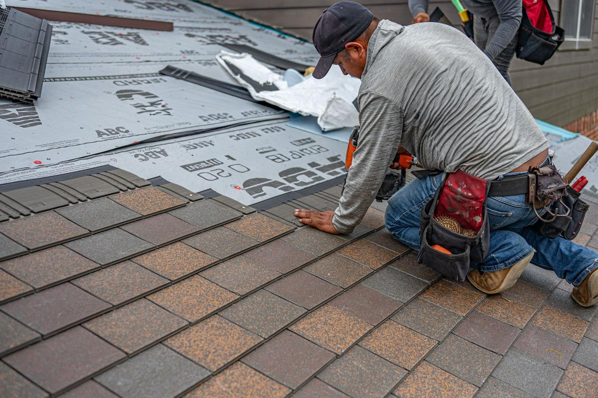

Every roofer in town has a website. Most of them were built the week the truck got lettered and have not been touched since.
SEO for roofers comes down to the three things Google says it weighs in local results: relevance, distance and prominence. In practice that means a Google Business Profile with the right category and services, a website with a real page for each roofing job and each town you work, and a steady stream of recent reviews. None of it is secret. Most roofing companies simply do one of the three and wonder why the other two companies keep showing up above them.
How does Google decide which roofers show up first?
When someone searches "roof repair" plus a town, Google shows two different things: the map pack with three businesses, and the ordinary list of websites underneath. Both lean on the same three signals, which Google names in its own local ranking guidance.
- Relevance is whether your profile and your pages actually say you do the thing being searched. A site with one page that says "roofing services" is not very relevant to "hail damage roof inspection".
- Distance is how far you are from the searcher. You cannot change it, so stop worrying about it.
- Prominence is how well known you are: reviews, links from other sites, mentions of your name, and how strong your website is in general.
Two of the three are work you can do. That is the whole job, and it is also why it takes months rather than a weekend.
What should a roofer's Google Business Profile include?
The profile is the first thing a homeowner sees, and for a lot of calls it is the only thing they see. Get these right before anything else:
- Primary category: Roofing contractor. It is the strongest relevance signal you control. Add a small number of secondary categories only for work you really do.
- Services filled in, one per real job: replacement, repair, storm damage inspection, and whatever else you bill for.
- A service area, not a storefront. Most roofers work out of a yard or a home office. Google's profile guidelines say a service-area business should hide its address, and that the service area should not stretch past roughly two hours of driving from where you are based.
- Your real business name. "Smith Roofing" is a name. "Smith Roofing Best Hail Repair Plano" is a suspension waiting to happen.
- Photos from real jobs, added as the work happens, not forty stock shots uploaded on day one.
We go field by field in our Google Business Profile guide for contractors, including the ones that do nothing and the ones that quietly cost you calls.
Which pages does a roofing website need to rank?
A roofing website ranks when it has one clear page for each job you want and each town you want it in. The home page cannot rank for everything at once, any more than one yard sign can face every street.

The short list for most roofing companies:
- A page for each service: roof replacement, roof repair, storm and hail damage inspections, and any material you specialise in.
- A page for each town you really serve, with something on it that is true of that town. A copy of the same page with the city name swapped is not a city page, and Google treats it as filler. More on that in how many city pages a contractor needs.
- An about page with your license or registration number and real photos of your crew. We go through the whole list in what should be on a roofing company website.
- A page that answers cost questions honestly, because "how much is a new roof" is one of the most searched questions in the trade.
- A call button on every page and a site that loads quickly on a phone. Google's Core Web Vitals measure exactly that, and a homeowner standing in the yard looking at a missing shingle is on a phone.
Ask a friend across town to search "roofer" plus your city on their phone and send you a screenshot of the top three. Write down each one's review count, the date of their newest review, and their primary category. That is your bar, and it costs nothing to find out.
How long does roofing SEO take?
Real movement usually shows in 60 to 90 days, and steady lead flow by month four to six, as pages and reviews stack up. Anyone promising page one in two weeks is guessing, or planning to rank you for a phrase nobody searches.
The reviews part is the one owners underestimate. BrightLocal's consumer review survey found that most people look for reviews written in the last three months, so a roofer with a hundred reviews and nothing recent looks less busy than one with thirty and four from this month. Ask after every finished job, the same day, every time.
Why does storm season change the plan?
After hail, searches for roof inspections jump overnight, and the companies that collect those calls built their pages months earlier. Google does not rank a page the week you publish it. If the storm page goes up after the storm, it is mostly helping next year.
The other truth about storm season is that search only finds the homeowners who are looking. Plenty of people with a damaged roof never search at all, because they have not been up there and do not know. For those homes the work starts from the storm data, not from Google, which is what Roof Command is built for: hail over every home in your area, the hardest-hit roofs first, and a route for the people knocking.
What Wing Digital does for roofers
Our Local SEO package is the list above, done for you and kept up every month: the website built or rebuilt, the Google Business Profile set up and managed, two posts a month, a page for each city you serve, and a ranking report written in plain English. Roofers get it inside Roof Command. If your current site is solid, we keep it and say so on the call.